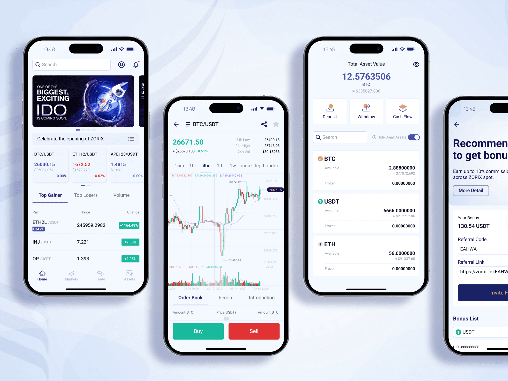
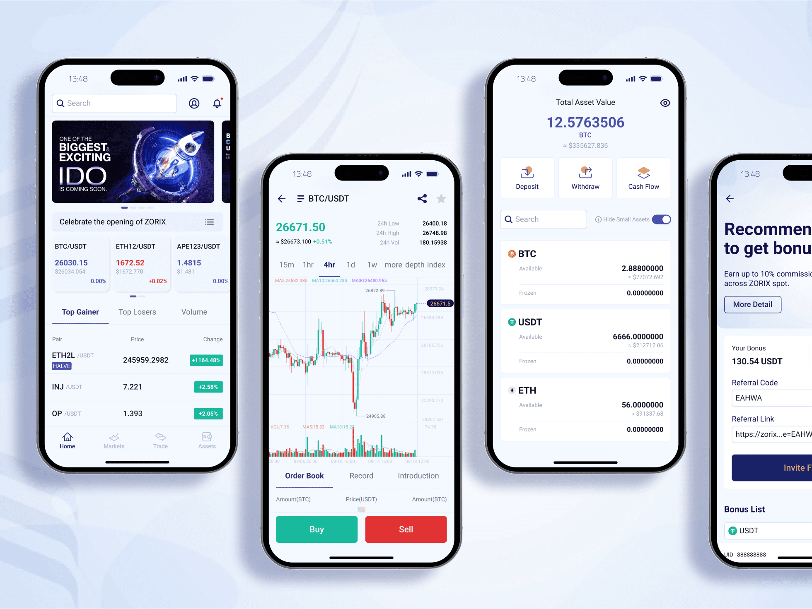
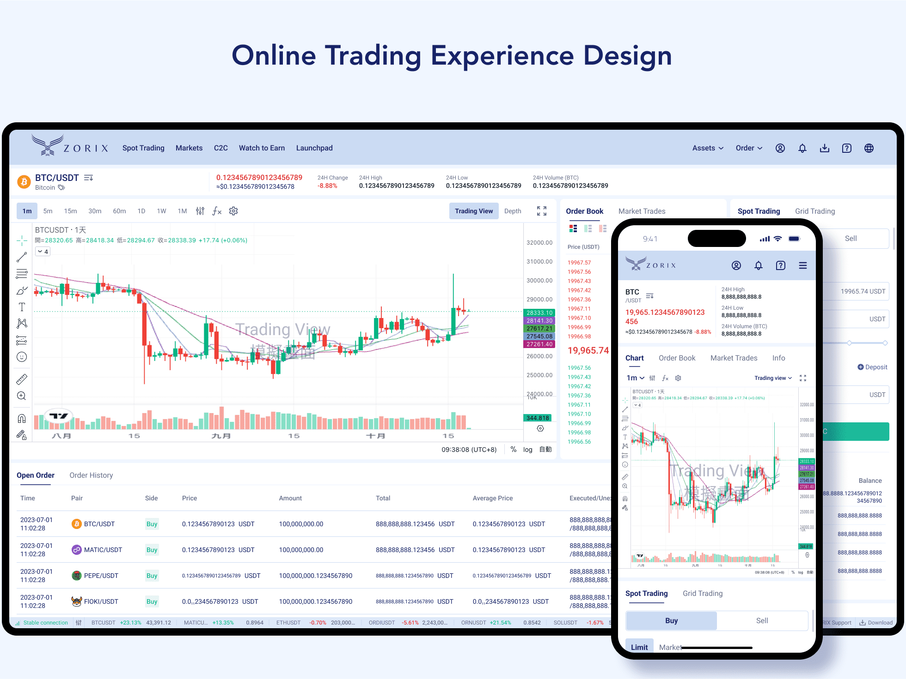
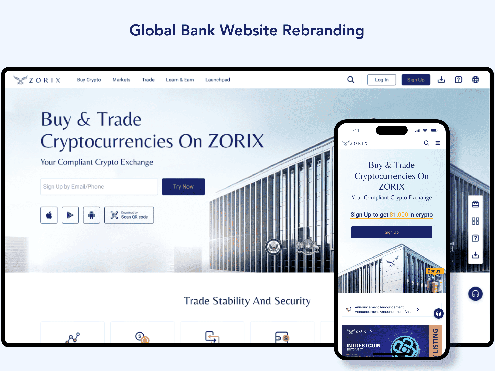

ZORIX change 交易所 Web / App
工作項目
UX使用體驗研究｜UI設計｜Design System
專案角色
擔任產品設計主管 | 設計2人＋工程師5人
專案介紹
專案目標是打造 體驗友善且高度信任 的虛擬貨幣交易平台，同時結合區塊鏈金融的業務邏輯，提供一致且透明的產品體驗。為建立一個 專業、可信任的區塊鏈金融產品，我主導建構 ZORIX 數位產品 Guideline System，並針對不同裝置進行使用體驗研究與介面設計。
 

0-1建立Design System
- 制定設計規範與模組化元件，統一產品設計語言，提升一致性
- 協助跨部門建立共識，提升設計管理效率與開發順暢度
- 為元件功能建立使用準則，幫助跨部門合作及設計管理
Icon交付流程自動化
系統化定義Icon設計細節及命名規範，應用Figma插件與Github自動串接，與工程師共同協作優化交付流程，達到Icon交付流程自動化。產品功能設計與邏輯規範
- 以 Withdraw Limit 提幣畫面為例，設計時需考量 KYC與非KYC狀態差異 以及 幣別的提幣限額（單次 / 當日 / 最大 / 最小額度、可用餘額）
- 計算邏輯自動化 → 使用者無需自行計算即可清楚理解限制金額
- 為Placeholder 與金額提示規則 → 不同幣別顯示可提領區間，保持操作流暢
- 資訊透明設計 → 顯示提幣限制與說明，符合交易所透明原則
- 情境化流程設計 → 不同角色、情境下的操作體驗規劃


國際銀行 UI 設計研究
分析國際銀行網站的設計語彙、資訊架構與功能項目，並將研究成果應用於 ZORIX 平台，提升專業感與用戶信任度
